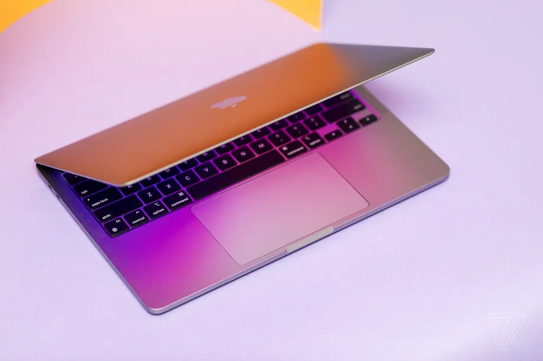

- Model: 82RF000TUS
- Intel Core i7-12700H processor (up to 4.7GHz, 14 cores)
- 16GB DDR5 4800MHz (user-replaceable up to 32GB)
- Nvidia GeForce RTX 3070 Ti GPU with 8GB GDDR6 VRAM (1,485MHz boost clock speed, 150W maximum power)
- 512GB NVMe SSD (user-replaceable, one M.2 2242 slot, one M.2 2280 slot)
- 16-inch WQXGA 2560 x 1600 IPS display, 165Hz refresh rate, 500-nit, VRR
- ✅World-class productivity and gaming performance
- ✅Attractive medium-high-res, medium-fast-refresh 16:10 display
- ✅Responsive keyboard
- ✅Plenty of ports
- ✅Satisfying ability upgrades and RPG elements
- ➖No SD or microSD card slot
- ➖No biometrics
You should probably skip the base M2 MacBook Pro model
It’s slower than any ‘Pro’ computer ought to be
The base model 13-inch M2 MacBook Pro with 256GB of storage and 8GB of RAM is available to buy right now. You probably shouldn’t buy it. With more details coming out about just how slow it is compared to higher-specced versions of the M2 and even the M1 model, it's becoming increasingly clear that the cheapest 13-inch M2 MacBook Pro is a real stinker of a deal.
Earlier this week, videos from Max Tech and Created Tech showed the storage in the base M2 model was slow compared to the M1 version, with 50 percent slower SSD read speeds and 30 percent slower write speeds. It’s because Apple opted to use just one 256GB NAND flash storage chip instead of two 128GB chips as found on the M1. The move, likely a cost-saving one, means none of the reading and writing can happen in parallel across two chips. Everything has to go through just the one, and that effectively throttles the otherwise high-octane M2 chip.
Now, Max Tech has tested the base 8GB RAM / 256GB storage model against the more expensive 13-inch M2 MacBook Pro with 512GB of storage and 16GB of RAM, and yup, it’s slower than that laptop, too! That’s partially because the higher-specced device uses two 256GB NAND chips instead of one, so processes can run in parallel across the two chips. They’re likely the same NAND chips as found in the base model — further suggesting the slowdown is related to the decision to use just one NAND chip in the cheaper MacBook Pro.
For example, when Max Tech exported 50 42-megapixel images in Lightroom, the 8GB / 256GB MacBook Pro did the task in two minutes flat. The 16GB / 512GB MacBook Pro did it in one minute and seven seconds. That’s nearly double the speed just by using more RAM and faster storage.